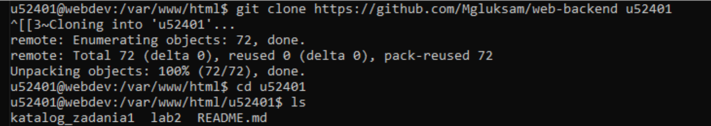
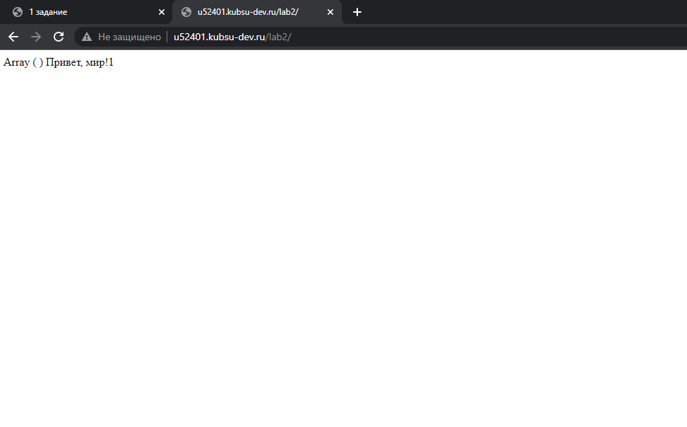
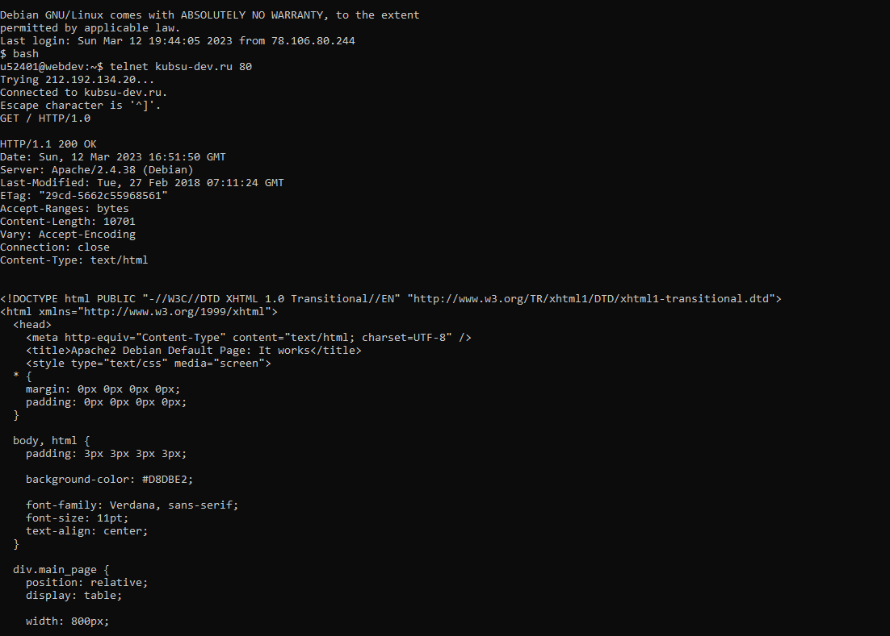
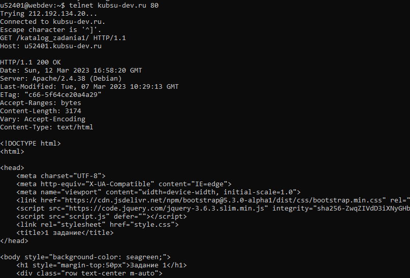
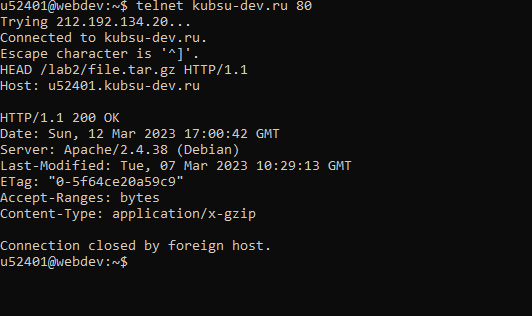
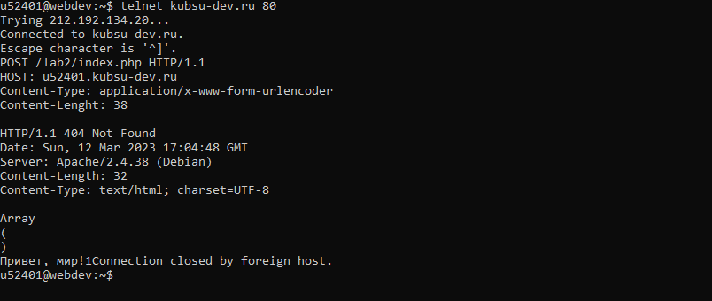
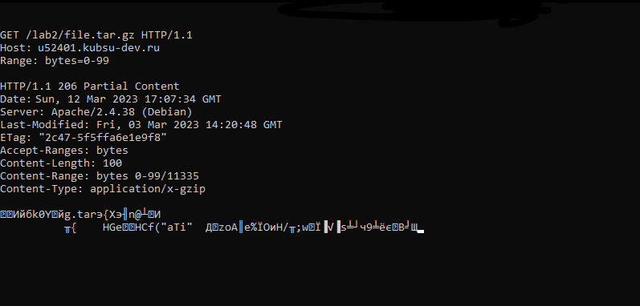
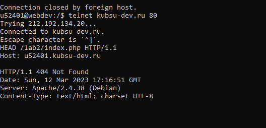

Создаем папку в локальном репозитории, публикуем изменения репозитория (git push origin main)

Проверка работоспособности index.php

Заходим в консоль windows, вводим 'telnet kubsu-dev.ru 80' и вставляем HTTP для получения главной страницы методом GET в протоколе HTTP 1.0

Получаем внутреннюю страницу по адресу /katalog_zadania1 методом GET

Определяем размер файла file.tar.gz в заголовке ответа Content-Length с помощью метода HEAD

Отправляем комментарий на сервер по адресу /index.php с помощью метода POST, указав тип и размер отправляемых данных

Определяем кодировку ресурса /index.php в заголовке ответа Content-Type с помощью метода HEAD

Получаем первые 100 байт файла /file.tar.gz с помощью метода GET, указав в заголовке Range - количество байт для получения